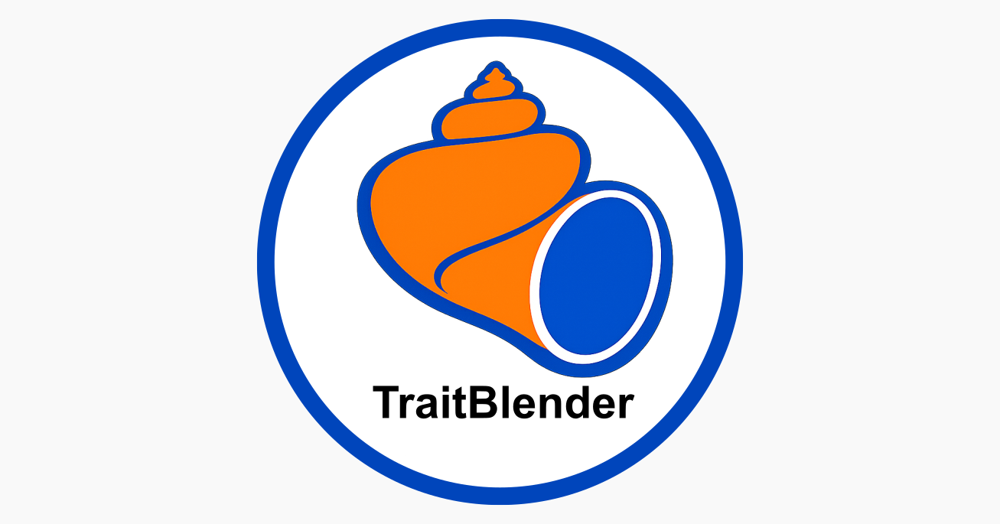
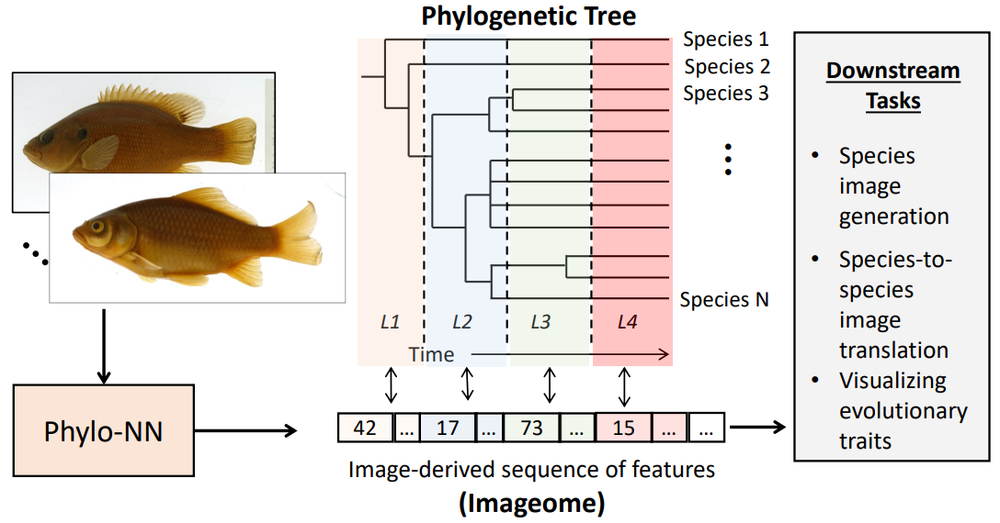
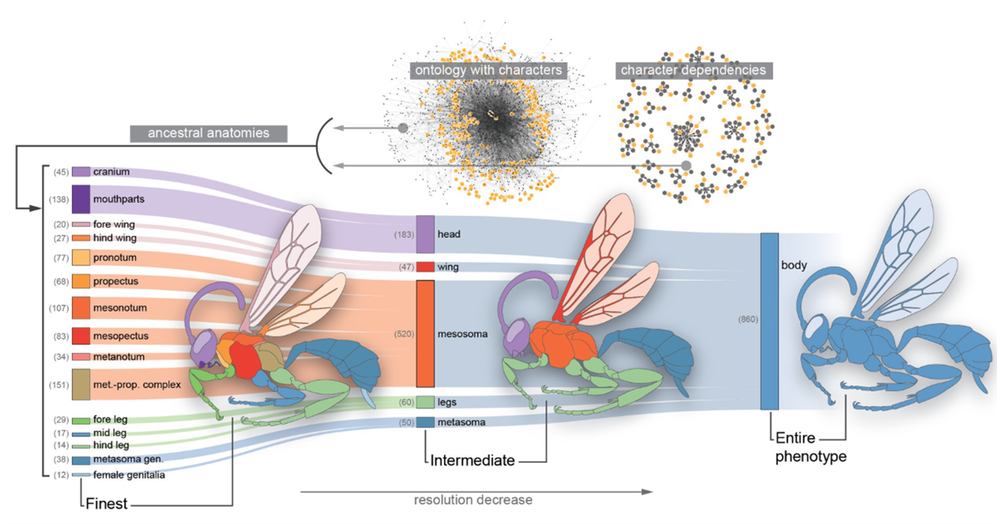

Software
TraitBlender

TraitBlender is a Blender add-on I developed for generating synthetic museum-style image and 3D mesh datasets in evolutionary morphology. Using pre-defined theoretical or empirical morphospaces, users can simulate taxa on phylogenies, and render standardized specimen images in bulk—useful when you need ground-truth evolutionary processes for benchmarking computer vision models.
PhyloNN

PhyloNN uses restructured autoencoders and multi-task learning to incorporate evolutionary information such as phylogeny and ontogeny into deep learning models for phenotypic data. The goal is to ground high-dimensional or raw datasets in biological structure rather than treating morphology as an unstructured prediction problem.
RPhenoscate

RPhenoscate incorporates biological knowledge into comparative analyses through ontologies: knowledge graphs that specify hierarchical relationships between traits. This helps ensure that statistical models reflect biologically meaningful assumptions about how characters relate to one another.
Revticulate
Revticulate is an R package that provides an interface between R and RevBayes, making it easier to set up, run, and analyze Bayesian phylogenetic inference workflows from within R.
SISRS
SISRS (Site Identification from Short Read Sequences) is a phylogenomic pipeline for identifying informative sites and inferring orthologous sequences from short-read genomic data.